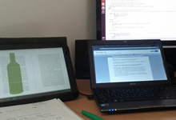

John Quealy
Urbildpunkt.
Thoughts, Ideas, & Musings
-
I'm John Quealy, and This is How I Work
April 2, 2013I explain the Urbildpunkt. name and how I like to work.
- 
Urbildpunkt.
Thoughts, Ideas, & Musings
I explain the Urbildpunkt. name and how I like to work.